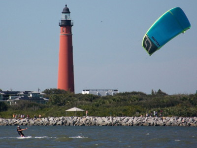
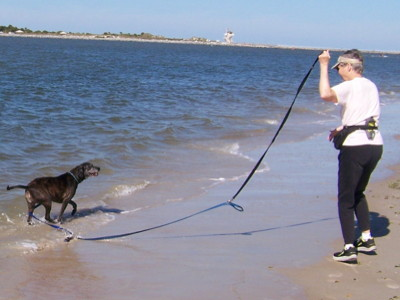
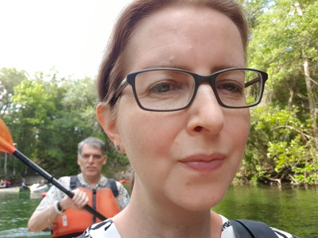
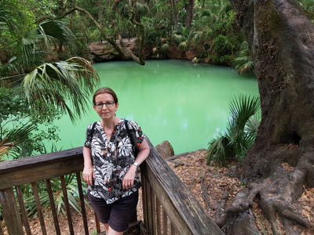
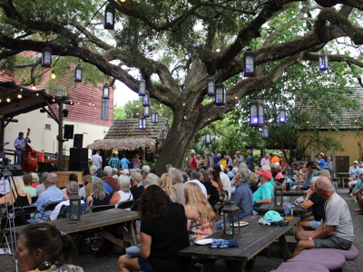
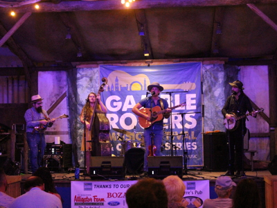

2022 Holiday Web Page
| Erich and Margie's 2022 Holiday Web Page |
December After opening presents on Christmas, we took Pancho to the dog beach. On the way home from dinner one night, Erich had to dodge a car going the wrong way down the divided highway. Some of Erich's puzzles were used in a newsletter for New Jersey teachers. Margie and Pancho saw a coyote in our front yard. And then they saw a different one the next day.
January Erich watched the third season of "After Life" and the first two seasons of "Lupin".
February Pancho turned 10. We watched "Groundhog Day" again. We had Missy, Barbara, and John over for Mah Jongg to celebrate Chinese New Year. Margie injured herself walking Pancho. Then one of her dog walkers caught covid, giving us a scare. Erich watched about 48 hours of Olympic coverage, mostly curling.
March We visited Erin and Tom at their condo. We celebrated at Miguel's birthday party.
April We celebrated Margie's birthday with some fine Indian food. And then celebrated again with Missy and Barbara and John with Thai food and games. We got a new UV light system to purify our well water. We played bocce and had drinks and dinner with Bill and Judi. We celebrated Easter with lots of our friends at Joan's.
Sylvia Erich's friend Sylvia from Germany visited us for 5 days. We celebrated all of our recent birthdays by eating cake for breakfast and opening presents. We had Ethiopian, Caribbean, Cajun, and Thai food, made pancakes at The Sugar Mill, and cooked our spinach/almond lasagna. We went to Blue Spring twice, Green Spring, Lake Woodruff, Lake Beresford, and the ocean. We attended a softball game, did a tour of Stetson, visited the key lime shop, played a round of bocce with Bill and Judi, and listened to Jazz in the Alley. We also held a home trivia party, spent a day in St. Augustine, and another day at the Kennedy Space Center.
May A few days later, we went to the Gamble Rogers Folk Festival, which had been canceled the previous two years due to Covid. Erich got his fourth Covid shot.
June It took him 2 hours, but Erich got his first REAL ID driver's license. Erich watched season 2 of "Star Trek - Picard", seasons 3 and 4 of "Star Trek - Discovery", seasons 1 and 2 of "Upload", season 1 of "Halo", and season 3 of "Umbrella Academy".
July Pancho reminded us how much he hates fireworks. After noticing that we had been to 2 restaurants of Yelp's 100 Best Restaurants in Florida (Santorini's downtown and Selam Ethiopian in Orlando), we decided to visit 2 others: Red Bud Cafe (a crepe place) in Daytona and Craft and Common (a coffee shop) in Orlando. Erich watched seasons 1 and 2 of "Star Trek - Lower Decks", season 1 of "Obi Wan Kenobi", season 1 of "The Book of Boba Fett", and season 1 of "Dexter - New Blood". Erich made friends with a raccoon at Mill Lake. To celebrate our 35th anniversary, we went to St. Augustine to see Bad Dog Mama.
August Erich watched seasons 4 and 5 of "The Good Fight" and seasons 1-3 of "Never Have I Ever". Erich was called for jury duty, but didn't have to serve.
September Erich watched seasons 1 and 2 of "Russian Doll" and seasons 1-3 of "Sex Education". We were hit directly by Hurricane Ian, and lost power for 5 painful days. There was minimal damage to the yard, aside from one tree that needed to be chainsawed.
October We celebrated Barb's birthday with a night of Mah Jongg. We went to St. Augustine to hear Dewey Via and Bad Dog Mama. The Brantons had us over for dinner. Bocce season started again, and we got 6th of 7 teams. Erich got his 5th Covid vaccine.
Erich's holiday puzzles can be found here. You can see our archive of our previous holiday web pages here.
     